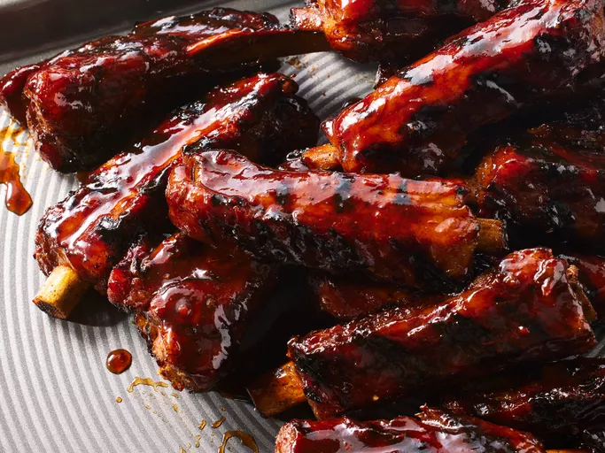

Homemade rib marinade is used in this barbecue ribs recipe that's easier than it looks. I usually cook the ribs the day before and grill them for a quick dinner the next night. The sauce is much better after it is cooked; it is not a dipping sauce.
Preheat the oven to 350 degrees F (175 degrees C).
Cut spareribs into serving size portions; wrap in double thickness of foil.
Bake in the preheated oven for 1 ½ hours. Unwrap and drain drippings. (I usually freeze drippings to use later in soups.) Place ribs in a large roasting pan.
Mix brown sugar, chile sauce, ketchup, soy sauce, Worcestershire sauce, rum, garlic, mustard, and pepper together in a bowl. Coat ribs with sauce and marinate at room temperature for 1 hour or refrigerate for 8 hours to overnight.
Preheat the grill to medium heat. Position the grate 4 inches above heat source; grease the grate with cooking spray.
Cook ribs on the preheated grill for 30 minutes, basting with marinade.
Home